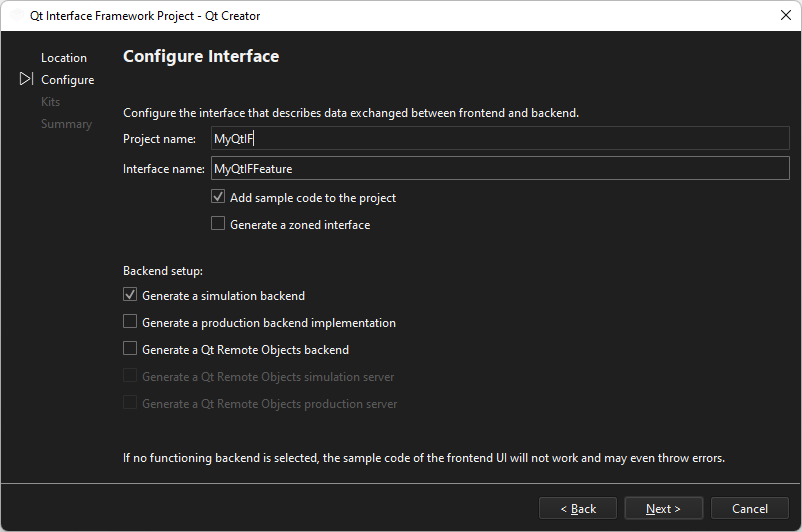

Create Qt Interface Framework projects
Use the Qt Interface Framework tools and core APIs to implement middleware APIs, backends, and services. With the Qt Interface Framework Generator, you can use the QFace interface definition language (IDL) to define new APIs and generate Qt C++ classes and QML types.
Qt Interface Framework consists of:
- The core module, which has base classes and common code for all APIs that you create.
- A front-end API for a feature.
- A backend interface for the feature, and one or more backends that implement it to connect to either the underlying service or to a simulation of it.
To make it possible to reuse code from previous projects, while incorporating code developed by many teams, Qt Interface Framework feature APIs are split into two layers: a frontend and a backend. You can connect one frontend to many backends, as the core module makes it easy to find the corresponding backend.
To create a Qt Interface Framework project for a feature with a frontend and a backend:
- Go to File > New Project > Other Project, and select Qt Interface Framework Project.
- Specify the name and location of the application.
- Select Next.
- In Project name, type the name of the project.

- In Interface name, type the name of the interface that describes the data to exchange between the frontend and backend of the feature.
- Select Add sample code to the project to generate boilerplate code for the project.
- Select Generate a zoned interface to create a single API for many points, such as operating the windows, mirrors, and air-conditioning of a car.
- In Backend setup, select options for generating the backend.
- Select Next to select a kit for building and running the project.
- Select Next to create the project.
Change the boilerplate code in the project to implement a feature.
See also How To: Create Projects.